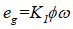
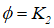
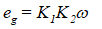
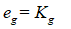
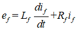
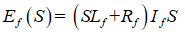
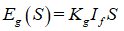
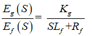
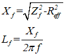

TRANSFER FUNCTION OF SEPERATELY EXCITED DC GENERATOR.
AIM:
To obtain the transfer function of a DC generator.
SOFTWARE/SIMULATION PLATFORM:
MATLAB/SIMULINK
THEORY:
A DC generator can be used, as a power amplifier in which the power required to excite the field circuit is lower than the power output rating of the armature circuit. The voltage induced eg the armature current is directly proportional to the product of the magnetic flux, setup by the field and the speed of rotation, of the armature which is expressed as,
 ....(1)
The flux is a function of field current and the type of iron used in the field. A typical magnetization showing flux as a function of field current is shown in figure.
Upto saturation the relation is approximately linear and the flux is directly proportional to field current i.e.
 if ....(2)
Combining both equations,
 if ....(3)
When used as a power amplifier the armature is driven at a constant speed and the equation becomes
 if ....(4)
A generator field winding is represented with Lf and Rf as inductance and resistance of the field circuit. The equation for the generator are,
 if ....(5)
Finding laplace transform of the equation 4 and 5 ,
 if ....(6)
 if ....(7)
 if ....(8)
Combining the above two equations ,Then the transfer function of a DC generator is given as,
1.Make the connections as shown in circuit diagram. ( Refer figure 1)
2.By observing the precautions switch ON the supply.
3.Start the motor by using 3 pint starter and run it for the rated speed of the generator by adjusting motor field rheostat
4.Adjust the generator field rheostat in steps and take both ammeter (field current) and voltmeter (generated voltage) readings. Also note down field voltage readings.( Refer : Table 1 )
5.Throughout the experiment the speed of the generator must be kept constant (rated value).
6.A typical variation of the generated voltage for different field current is shown in figure 3.
7.Slope of the curve at linear portion will be the value of Kg in ohms.
8.The ratio of Vf and If gives the field resistance Rf . Find its average value. The effective value of the field resistance is , Reff = Rf *1.2.
To find Lf :
1.Make the connections as shown in fig.2.
2.By observing the precautions ( i,e Initially the auto-transformer should be in minimum voltage position ) switch on DPSTS.
3.By varying the auto- transformer position in steps, values of ammeter
and voltmeter readings are taken. ( Refer : Table 2 )
4.The ratio of voltage to current gives the impedance ,Zf of the generator
field winding.
Inductance Lf is calculated as follow,

Substituting the values of Kg ,Lf and Rf in equation (8), transfer function of the DC generator is obtained.